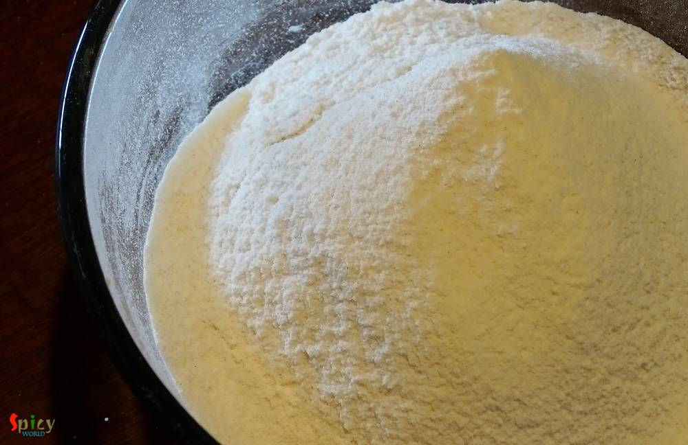
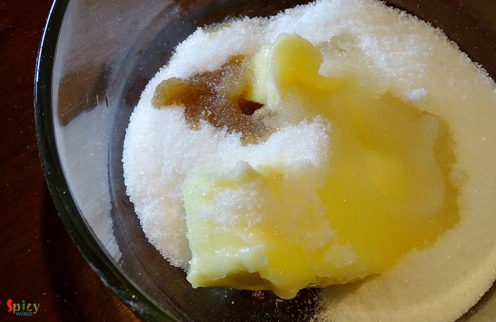
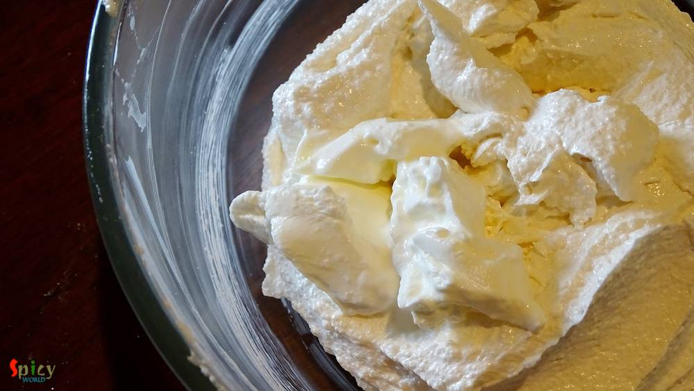
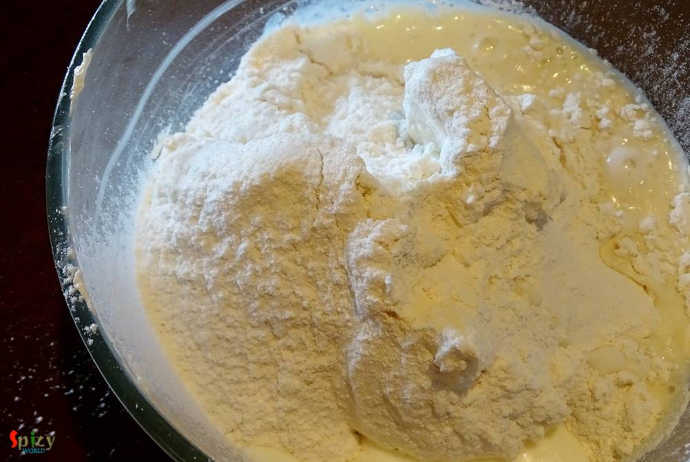
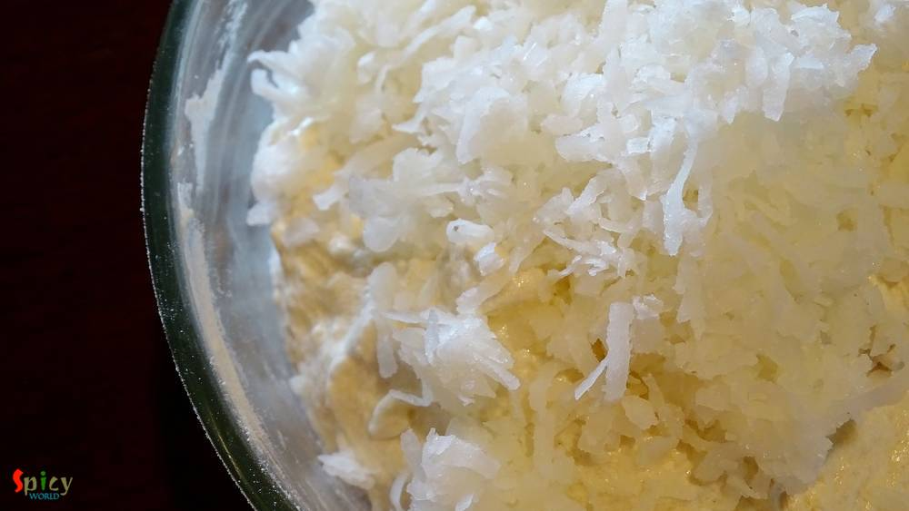
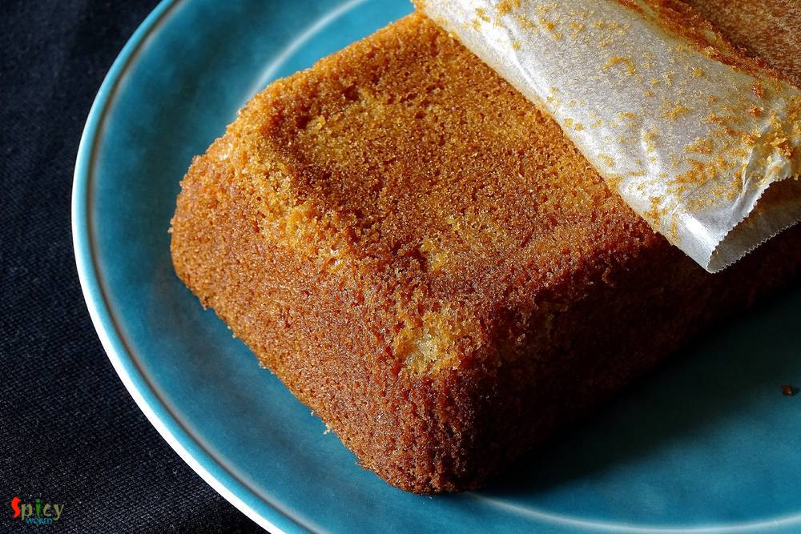
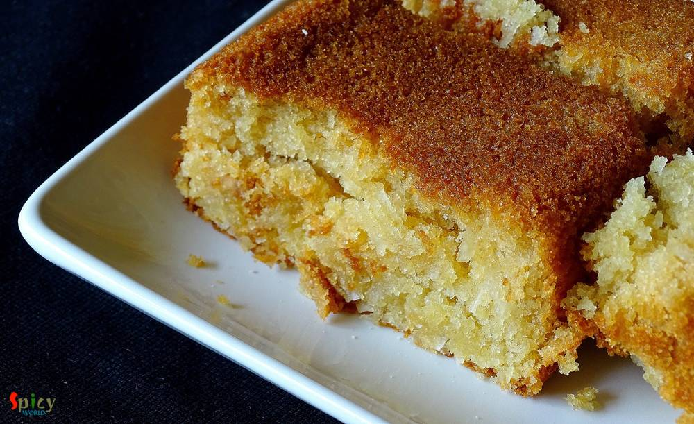

Simple and Easy Recipes
Soft Coconut Cake (Egg Less)
© 2016 Spicy World, Published on: Mar 17, 2016
I made last weekend another successful eggless cake and the flavour was 'coconut'. I have never used coconut before in cake batter but this time I do and result was 'scrumptious'. After making this, your heart will call for a bite to this moist cake and then a sip of warm tea ... aaaahh pure bliss ! If you are obsessed with coconut then treat yourself with a big piece of this eggless flaky coconut cake. I won't tell you about the beautiful aroma, because, to get that you have to make this cake !
")
Ingredients
- 1 cup flour.
- Half Teaspoon of baking powder.
- 1 Teaspoon of baking soda.
- Half cup of coconut flakes / desiccated coconut / fresh grated coconut.
- 2 Tablespoons of curd.
- Half cup + 1 Tablespoon of sugar.
- 1/4 th cup of soft butter.
- Pinch of salt.
- 1 Teaspoon of vinegar.
- 1 Teaspoon of coconut / vanilla essence.
- 3/4th cup of coconut milk / full fat milk.
")
")
Steps
Sieve the flour, baking soda, baking powder and salt twice / thrice in a bowl. Keep it aside.
Now take soft butter, sugar, vinegar and coconut / vanilla essence in a mixing bowl. Beat everything for 10 minutes or until they becomes fluffy and light.
Now add the curd / sour cream to this butter and mix well.
Start adding the flour mixture and milk little by little through mixing.
After mixing everything well, add coconut to the batter. Give it a good mix.
Pour the batter in a baking tray and bake it in a preheated oven for 50 minutes in 350F.
After that let it cool down completely and then remove it to a plate.
Your coconut cake is ready ...
Serve this with a cup of tea ...
 (Final)")